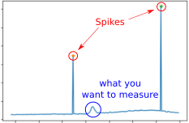

3. Cleaning and Averaging Spectra¶
When repeating the same measurement, several spectra (N_iter) are acquired. This improves statistics and helps remove unwanted artifacts such as spikes.
3.1. Why multiple short acquisitions?¶
{kind=link}
Individual spectra often contain sudden spikes caused by detector instabilities or electronic noise. These spikes are random, unwanted, and may distort the Gaussian signal.
To deal with them, Alpaga provides:
- analyze_run.clean_spectra_mean_n(L_y, L_mean_cleaning_n=[1, 1, 1, 3], L_mean_cleaning_evo_max=[2, 1.5, 1.4, 1.3])[source]
Detect spikes in the list of data L_y using a local averaging method. This method is designed to avoid removing features that are not actual spikes. Instead of applying a single rough treatment, several small treatments are performed, so that the spectra are affected as little as possible.
Steps
For given mean_cleaning_n (integer) and mean_cleaning_evo_max (float), the function scans the list L_y to clean. For a value L_y[k], it computes the local average:
ave_k = (L_y[k-mean_cleaning_n] + … + L_y[k-1] + L_y[k+1] + … + L_y[k+mean_cleaning_n]) / (2*mean_cleaning_n)
i.e. the local average over 2*mean_cleaning_n neighbors, excluding the point k.
The value L_y[k] is compared against mean_cleaning_evo_max × ave_k. If L_y[k] is larger, it is considered a spike. In this case, L_y[k] is replaced by ave_k for the spike detection process only (not for the final analysis). Spikes are stored in the list L_population: if L_population[k] = 0, point k is a spike, otherwise it is 1. The averaging procedure will later use this list to remove the spikes.
For every mean_cleaning_n and mean_cleaning_evo_max declared in the input arguments L_mean_cleaning_n and L_mean_cleaning_evo_max, steps (1) and (2) are repeated, updating L_y when spikes are detected.
This multi-pass approach helps detect as many spikes as possible, while minimizing false positives. A recommended strategy is to start with stricter parameters, and progressively decrease the threshold. For example:
L_mean_cleaning_n = [1, 1, 1, 3] L_mean_cleaning_evo_max = [2, 1.5, 1.2, 1.1]
performs 4 treatments. The first 3 use only the two nearest neighbors (L_y[k-1] and L_y[k+1]) to compute the average. In the first pass, a point is flagged as a spike if it is twice this local average. In the second pass, the threshold is 1.5, then 1.2 in the third. The final pass uses 6 neighbors and a 1.1 threshold.
This procedure was designed to catch spikes that may span 2–3 consecutive points (rare but possible). It is recommended to experiment with L_mean_cleaning_n and L_mean_cleaning_evo_max to ensure spikes are removed without altering the rest of the spectra. For instance, try:
L_mean_cleaning_n = [1, 1, 1, 3] L_mean_cleaning_evo_max = [2, 1.5, 1.1, 1.05]
to see the effect of overly strict parameters.
- Parameters
L_y (list) – Data to clean.
L_mean_cleaning_n (list of int, optional) – List of neighborhood sizes for computing local averages. Must have the same length as L_mean_cleaning_evo_max.
L_mean_cleaning_evo_max (list of float, optional) – List of maximum coefficients used for spike detection. Values should generally be between 1.1 and 2–3. A point is flagged as a spike if L_y[k] > coeff × local average.
- Returns
L_population – List of the same size as L_y, initialized to 1. If a spike is detected at position k, then L_population[k] = 0.
- Return type
list
Examples
For practical usage, see alpaga.averaging_and_cleaning function.
Notes
A Fourier-based cleaning method may be added in the future if requested. However, for short acquisition times, it may distort the spectra.
{kind=link}
The method detects points that strongly deviate from the average across iterations, and replaces them with more reliable values. Shorter acquisitions with more repetitions make spike detection easier.
3.2. Averaging procedure¶
Once cleaned, the spectra are averaged to obtain a stable signal:
- analyze_run.averaging_and_cleaning(name_file, N_iter, L_filename=False, extension='.dat', fct_name=<function standard_file_name>, type_cleaning='mean', L_mean_cleaning_n=[1, 1, 1, 3], L_mean_cleaning_evo_max=[2, 1.5, 1.4, 1.3], show_spectra='average', figure_counter=1)[source]
For a set of acquisitions with filenames:
name_file + ‘_’ + i + extension,
return the mean spectra cleaned of spikes. Currently, only one type of averaging and cleaning is available through type_cleaning, which is ‘mean’.
Each acquisition i is processed using the function
alpaga.clean_spectra_mean_n()with optional arguments L_mean_cleaning_n and L_mean_cleaning_evo_max, see Cleaning and Averaging Spectra for details. Spikes are detected for each spectrum, and the mean is computed element-wise over all acquisitions, ignoring the spikes.Example: If there are 4 acquisitions, for the k-th element (e.g., wavelength 404 nm):
If no spikes are detected for all 4 acquisitions, the average is the mean of all 4 values.
If the second acquisition has a spike at this element, the average ignores the second acquisition only for this element.
- If all 4 acquisitions have a spike at this element, it may indicate:
Detection parameters are too strict: decrease values in L_mean_cleaning_evo_max.
Acquisition time per spectrum is too long, increasing spike probability.
A serious detector issue or other abnormality (e.g., ISS data).
In such cases, a warning is printed, and the mean value is used for that element, but acquisition parameters should be reconsidered.
- Parameters
name_file (str) – Prefix for all acquisition filenames. Use absolute paths; see File Management for more details.
N_iter (int or list of int) – Number of acquisitions to average. If a list is provided, only those iterations are processed.
L_filename (bool or list of str) – If a list is provided, contains the absolute filenames to process, bypassing generated filenames.
extension (str) – [Optional] File extension for data files.
fct_name (function) – [Optional] Function used to generate a filename from prefix, iteration, and extension. Defaults to
alpaga.standard_file_name().type_cleaning (str) – [Optional] Currently only ‘mean’ is supported.
L_mean_cleaning_n (list) – [Optional] See
alpaga.clean_spectra_mean_n()for details.L_mean_cleaning_evo_max (list) – [Optional] See
alpaga.clean_spectra_mean_n()for details.show_spectra (str) – [Optional] ‘average’ plots only the final averaged spectra, ‘all’ also plots spike detection for each iteration. Any other value disables plotting.
figure_counter (int) – [Optional] Number of the first figure for plotting.
- Returns
L_x_axis (list) – X-axis values from the spectra files.
L_spectra_t (list) – Averaged and cleaned spectra.
figure_counter (int) – Updated figure counter for subsequent plots.
Examples
names = 'Spectra_4.0' N_iter = 4 L_lambda, L_spectra, _ = alpaga.averaging_and_cleaning( names, N_iter, extension='.dat', type_cleaning='mean', L_mean_cleaning_n=[1, 1, 1, 3], L_mean_cleaning_evo_max=[2, 1.5, 1.2, 1.1], show_spectra='all', figure_counter=10)
This function applies the cleaning step to all spectra, then returns the averaged result for each angle.

3.3. Towards the Gaussian intensity¶
The procedure is not very sensitive to parameter tuning. The key is to record many short spectra so that spikes can be removed and the average converges.
The next step is to fit this averaged spectrum to extract the Gaussian intensity (see fitting procedure).